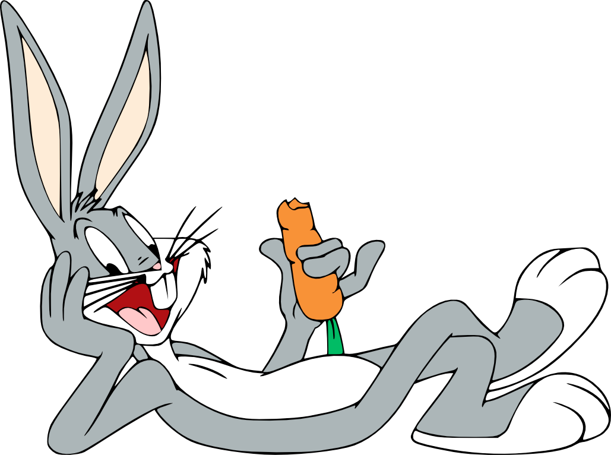

Looney Tunes & Merrie Melody
Una franquicia de medios que originalmente comenzó como un una
serie de dibujos animados de la compañía Warner Bros que
comenzó su andadura oficialmente en 1930 con el cortometraje
Sinkin' in the Bathtub.
A los personajes de dibujos animados más famosos de la Warner
a veces se les llama también Looney Toons, sobre todo en
conjunto. El idioma original de los Looney Tunes es inglés. La
expresión «Looney Tunes» («Canciones chifladas/Canciones
lunáticas») es una alusión a las Silly Symphonies (Sinfonías
tontas) de Walt Disney.
Desde 1940 hasta 1969, la serie Looney Tunes fue la más
popular en las salas de cine.
Por 1968 y 1969, Warner Bros (Propiedad de Seven-Arts) decidió
añadir color a varios cortos en blanco y negro para su
distribución en la televisión y el cine. Estos se pueden
encontrar en varias colecciones de dibujos animados de dominio
público o en Internet. En 1990, se empezaron a colorear
nuevamente los cortos, pero esta vez en computadora, incluso
se llegó a colorear la gran mayoría de los cortos en blanco y
negro en 1990, 1992 y 1995.
Diferencias entre "Merrie Melodies"

En 1931, la Warner había emprendido otra serie similar a Looney
Tunes: Merrie Melodies. Al principio, los personajes recurrentes
aparecían en los Looney Tunes, mientras que las Merrie Melodies
tenían personajes e historias aisladas y la música era el
ingrediente principal, además de ser filmadas en color a partir de
1934, mientras que los Looney Tunes aparecerían en color a partir
de 1942 (los últimos cortos de la serie en blanco y negro fueron
estrenados en 1943), y para entonces Merrie Melodies ya
incorporaba en sus películas personajes que se habían hecho
populares y los Looney Tunes ya no ocupaban únicamente personajes
recurrentes. La única diferencia notable entre una serie y otra a
esas alturas estribaba en los temas musicales empleados en la
cabecera y en el cierre de los cortos; como ejemplo, las canciones
utilizadas desde 1937 y 1964:
- Para los Looney Tunes, se empleaba una adaptación instrumental de Carl Stalling, Milt Franklyn y Bill Lava de la melodía principal de The Merry-Go-Round Broke Down (Rueda que rueda el carrusel para ella y para él), cuya letra era de Cliff Friend y Dave Franklin.
- En las Merrie Melodies, se empleaba una adaptación de Bernard B. Brown, Norman Spencer y los tres músicos anteriores de Merrily We Roll Along, canción de Charles Tobias, Murray Mencher y Eddie Cantor que se basaba vagamente en la tradicional Goodnight, Ladies, que se había empleado en los minstrels y que a menudo se atribuye a E. P. Christy (Edwin Pearce Christy, 1815 - 1862), artista de ese campo.
Trama
La popularidad de Looney Tunes se acrecentó al empezar la
redifusión de sus cortometrajes en la televisión, a mediados de
los años 50. Ya que con la televisión los niños tenían fácil
acceso a los cortos, se harían remontajes, sobre todo en los
años 70, en los que se eliminarían insinuaciones eróticas,
caricaturas y estereotipos raciales (sobre todo de negros,
asiáticos, judíos y amerindios, y la presentación de los
alemanes, japoneses e italianos como villanos), vicios
considerados reprobables (como fumar y la ingesta de alcohol o
de pastillas), violencia extrema, suicidios y actos peligrosos
que pudieran ser imitados por gente de corta edad.
Un puñado de cortometrajes de los Looney Tunes que datan de los
30 y 40 contenían estereotipos raciales muy prominentes como
para poder reeditar, con 11 cortos siendo retirados desde 1968.
Este grupo de películas se conoce como Censored Eleven. Los
aficionados pidieron tener acceso a ellas, pero durante casi 42
años se impidió, siendo accesibles únicamente en copias de video
"bootleg" al pasar al dominio público. En mayo del 2010, se
exhibieron algunos cortos de la lista, y ante la acogida que
tuvieron, Warner Bros. anunció que en el 2011 se publicaría un
DVD con todos los dibujos de la infame lista remasterizados.
También fueron retirados, de manera no oficial, unos cortos que
datan de la Segunda Guerra Mundial que dejaban en mal pie a los
japoneses, alemanes, y en menor media los italianos.
![]()